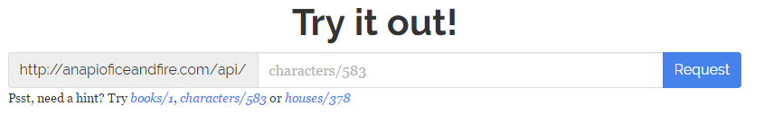

How-to-Guide: An API of Ice and Fire
Common Problems
Asynchronous Requests
When making requests you have the option to make it snychronous or asynchronous. If you chose to send a
synchronous request, you may see a warning pop up in the console window like this:

It's a warning against making synchronous requests because it could potentially freeze the webpage as it's
trying to load. To avoid the browser warning and create an overall better application, let's make some changes.
Before: Synchronous
var req = new XMLHttpRequest();
req.open("GET", "http://www.anapioficeandfire.com/api/characters?name=Arya Stark", false);
req.send(null);
var response = JSON.parse(req.responseText);
var aliasesList = "";
for (var i in response[0].aliases){
aliasesList += response[0].aliases[i] + ", ";
}
document.getElementById('name').textContent = response[0].name;
document.getElementById('culture').textContent = response[0].culture;
document.getElementById('born').textContent = response[0].born;
document.getElementById('aliases').textContent = aliasesList;
After: Asynchronous
var req = new XMLHttpRequest();
req.open("GET", "http://www.anapioficeandfire.com/api/" + inputQuery, false);
req.addEventListener('load',function(){
var response = JSON.parse(req.responseText);
console.log(response);
var aliasesList = "";
for (var i in response[0].aliases){
aliasesList += response[0].aliases[i] + ", ";
}
document.getElementById('name').textContent = response[0].name;
document.getElementById('culture').textContent = response[0].culture;
document.getElementById('born').textContent = response[0].born;
document.getElementById('aliases').textContent = aliasesList;
});
req.send(null);
Changes made:
req.addEventListener('load',function() - This callback function takes two parameters: the
event to listen for and the function that it will call once that event happens. In the example, we
are waiting/listening for the page to load, then we can call the function. function
is defined within the addEventListener function. You can either do this or define the function
beforehand. Listening for an event such 'load' will prevent our webpage from freezing as it's
trying to process the request and response from the API. Everything inside the function()
is nothing new except now it will only take place once the page is done loading.event.preventDefault(); - The send function is now at the bottom. It sends our
request only after we tell our program what to do once the page loads. For more information about synchronous/asynchronous requests: https://developer.mozilla.org/en-US/docs/Web/API/XMLHttpRequest/Synchronous_and_Asynchronous_Requests
Difference in using object IDs or Filtering in a Request
If you make a request using any filter/parameter like http://www.anapioficeandfire.com/api/characters?name=Jon Stark
, to access all the data values in the response Object, you have to use indexing. Example: response[0].culture.
This is because the response is an array of Objects. Even when the response is a single object array.
But if you use the object's ID number in the request like http://www.anapioficeandfire.com/api/characters/583, for any category, you don't need to
index the object to extract the data value. Example: response.culture. The response is not an array.
So when using an filter, the response will always be an array of Objects and you need to index to extract data values.
But if you use an ID number in the request, the response is just an Object, not an array so you don't want to index.
Data Key and Value Issues
While testing the API with various requests, I came across a couple of issues with the some key value pairs.
isAlive - The documentation lists in their character table of attributes the key isAlive which
holds a boolean value. Unfortunately, the key is not listed anywhere in the response and doesn't work as a filter for
requests.
died='' - This one is an interesting issue. If you want to display the death date of a character or a list
of characters and they have a null value set for their died key, the response it unable to finish.
Object ID's
If you visit the API website you'll see that on their homepage they have a way you can test out requests. They list a few
examples below the textbox.

To request a specific house, book or character you would have to enter their ID. For Jon Snow its
characters/583. The problem is there is no way to know the object's ID number. The way around this is to
instead send a request using a filter. For Jon Snow the filter would be characters?name=Jon Snow. The only problem
with using the the name filter is that you have to make sure to spell their name correctly and that there is a space
between their first and last name if they have one. Another problem is that there are some characters that don't have names, but they
do have an ID. So if you want a certain character, but don't know their name, you would have to filter your request based on
another attribute like culture, birthdate, alias or book they were featured in.
For more information about using filters, skip to How to Use the API.